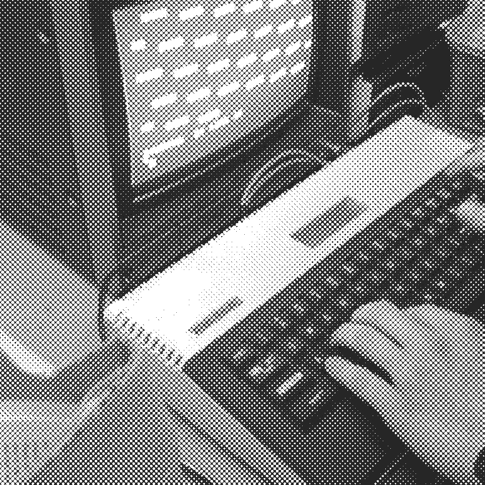
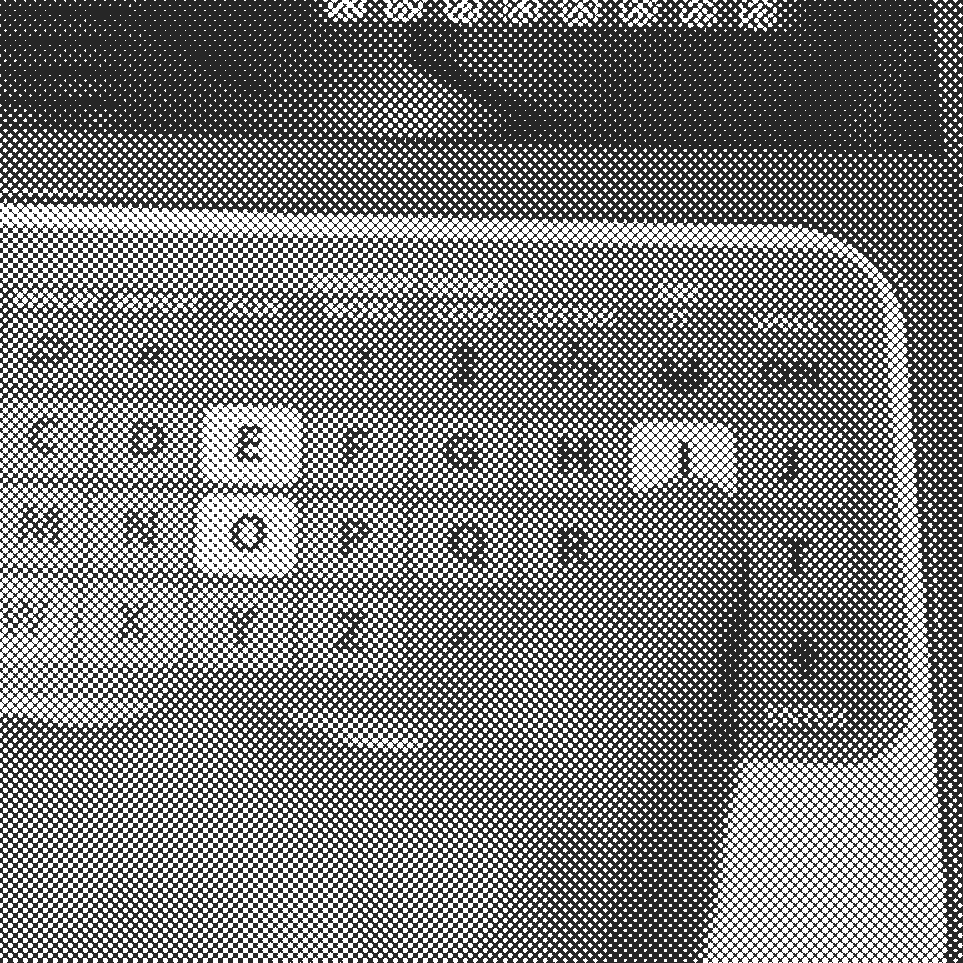
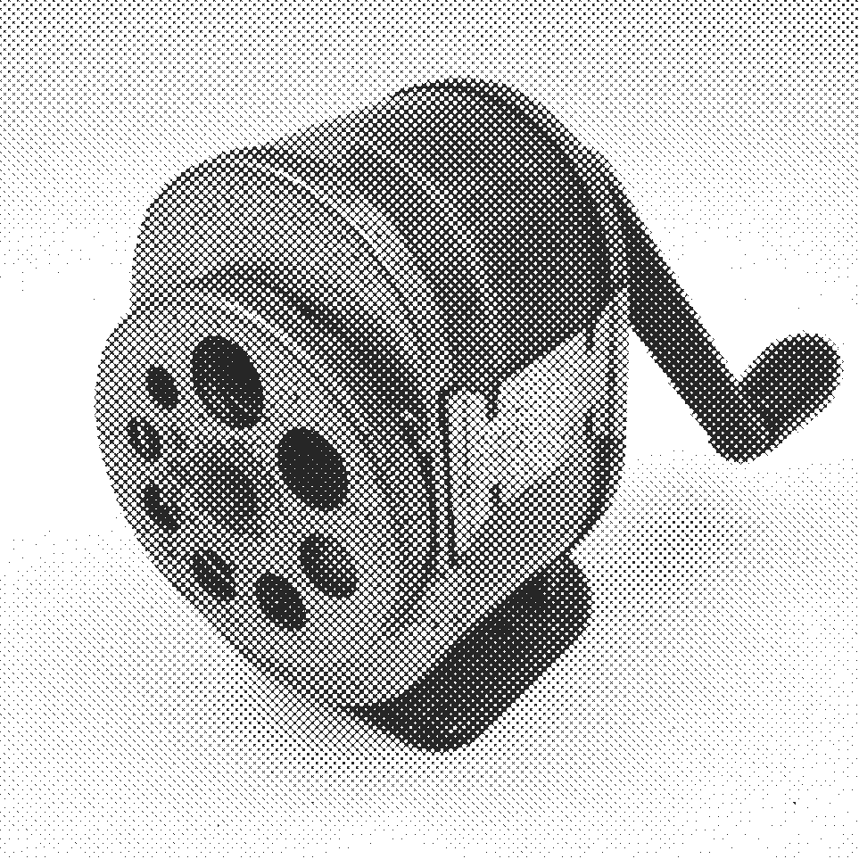
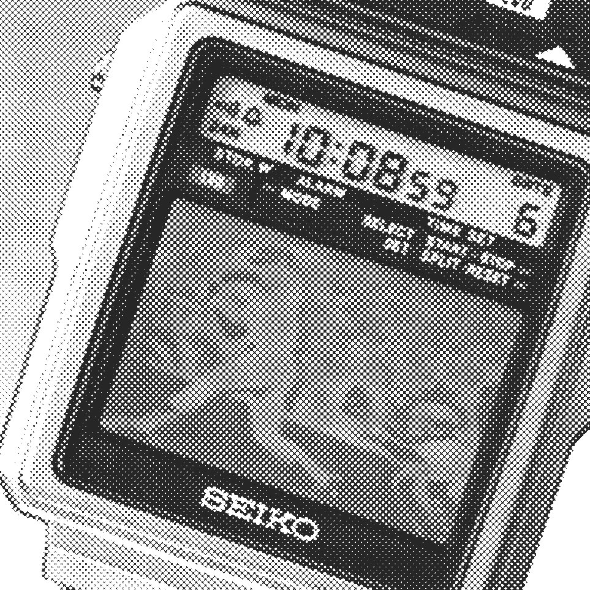
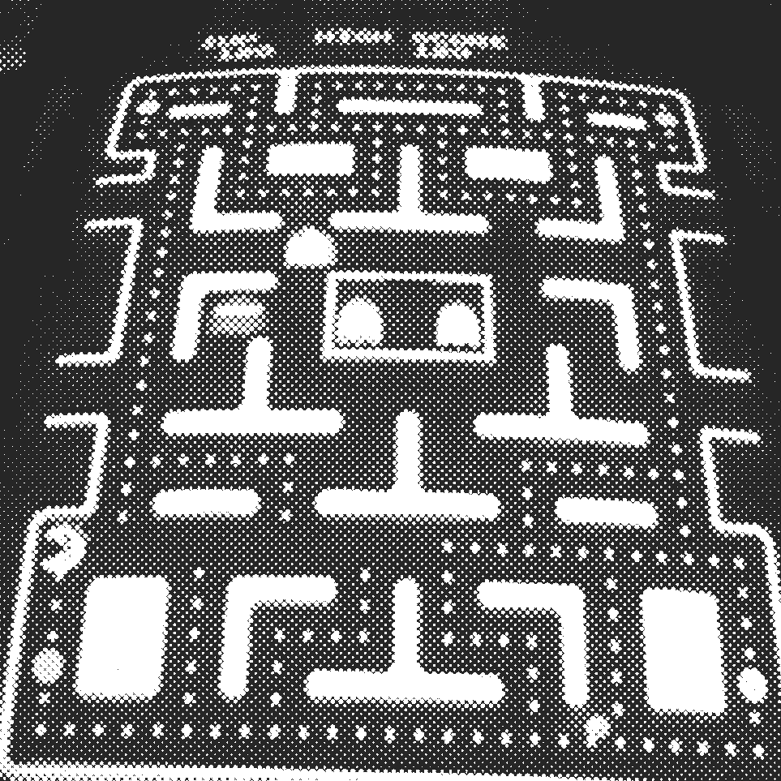
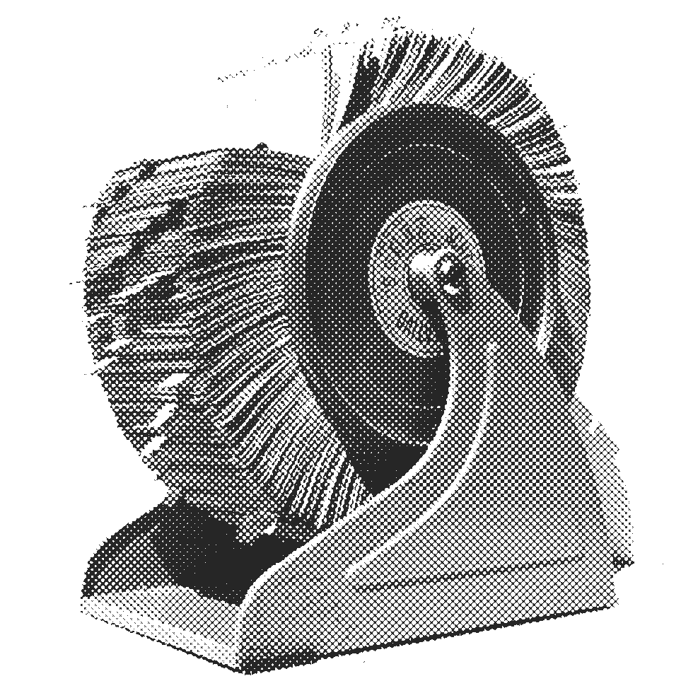

TECHNOPANIC

“Technology is a useful servant but a dangerous master.”
— Christian Lous Lange, historian & Nobel Peace Prize laureate

“The saddest aspect of life right now is that science gathers knowledge faster than society gathers wisdom.”
— Isaac Asimov, science writer & professor of biochemistry

“The real problem of humanity is the following: we have paleolithic emotions; medieval institutions; and god-like technology.”
— Edward O. Wilson, biologist

“The great danger of the modern world is that we will let technology determine what it means to be human, instead of the other way around.”
— Sherry Turkle, MIT sociologist of technology

“The unleashed power of the atom has changed everything save our modes of thinking, and thus we drift toward unparalleled catastrophe.”
— Albert Einstein, physicist

“We shape our tools and thereafter our tools shape us.”
— Marshall McLuhan, media theorist
@lasgunz